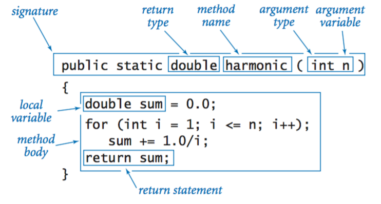

Functions
Introduction

Functions should be easily readable, reusable, and refactorable. Functions should only perform one thing to make it easier to test and break big problems down into tiny solutions that work together to solve the problem.
Info
This is based on Ryan McDermott's clean-code-javascript that was written in December 2016. Some of the principles may be very JavaScript specific. Most of the principles will apply to all languages.
Naming
Identifers use only ASCII letters and digits and in a small number of cases, noted below, underscores. Special prefixes or suffixes are not used. For example, name_, mName, function_name, and kName. Functions and methods are written in lowerCamelCase. The names should typically be verbs like sendMessage or stopTransaction.
Caution
Underscores may appear in test names to separate logical components of the name, with each component written in lowerCamelCase. One typical pattern is <functionUnderTest>_<state> like pop_emptyStack.
Bad
myFunction(...);
My_exciting_function(...);
SET_VARIABLE(...);
Good
getCreditCardNumber(...);
setAppointmentTime(...);
calculateAreaOfBackyard(...);
Whitespace
A single blank line should be used:
- Between consecutive functions and other variables.
- As required by other sections of this document.
A single blank line may also appear anywhere it improves readability, for example between statements to organize the code into logical subsections. A blank line before the first member or initializer, or after the last member or initializer of the class, is neither encouraged nor discouraged. Multiple consecutive blank lines are permitted, but never required (or encouraged).
Beyond where required by the language or other style rules, and apart from literals, and comments, a single ASCII space also appears in the following places:
- Separating the function's open curly brace (
{) and closing parenthesis ()) that precedes it on that line.
Places that should avoid spaces:
- Never put a space between the function name and the open parenthesis (
() - Open curly brace (
{) is on the same line as the function name
Bad
getCreditCardNumber (user)
{
//...
}
nextFunction (progressReport)
{ }
Good
setAppointmentTime(time) {
//...
}
calculateAreaOfBackyard(width, height) {
//...
}
Function arguments (2 or fewer ideally)
Limiting the amount of function parameters is incredibly important because it makes testing your function easier. Having more than three leads to a combinatorial explosion where you have to test tons of different cases with each separate argument.
One or two arguments is the ideal case, and three should be avoided if possible. Anything more than that should be consolidated. Usually, if you have more than two arguments then your function is trying to do too much. In cases where it's not, most of the time a higher-level object will suffice as an argument.
Since JavaScript allows you to make objects on the fly, without a lot of class boilerplate, you can use an object if you are finding yourself needing a lot of arguments.
To make it obvious what properties the function expects, you can use the ES2015/ES6 destructuring syntax. This has a few advantages:
- When someone looks at the function signature, it's immediately clear what properties are being used.
- Destructuring also clones the specified primitive values of the argument object passed into the function. This can help prevent side effects. Note: objects and arrays that are destructured from the argument object are NOT cloned.
- Linters can warn you about unused properties, which would be impossible without destructuring.
Bad
function createMenu(title, body, buttonText, cancellable) {
// ...
}
Good
function createMenu({ title, body, buttonText, cancellable }) {
// ...
}
createMenu({
title: "Foo",
body: "Bar",
buttonText: "Baz",
cancellable: true
});
Functions should do one thing
This is by far the most important rule in software engineering. When functions do more than one thing, they are harder to compose, test, and reason about. When you can isolate a function to just one action, they can be refactored easily and your code will read much cleaner. If you take nothing else away from this guide other than this, you'll be ahead of many developers.
Bad
function emailClients(clients) {
clients.forEach(client => {
const clientRecord = database.lookup(client);
if (clientRecord.isActive()) {
email(client);
}
});
}
Good
function emailActiveClients(clients) {
clients.filter(isActiveClient).forEach(email);
}
function isActiveClient(client) {
const clientRecord = database.lookup(client);
return clientRecord.isActive();
}
Function names should say what they do
Bad
function addToDate(date, month) {
// ...
}
const date = new Date();
// It's hard to tell from the function name what is added
addToDate(date, 1);
Good
function addMonthToDate(month, date) {
// ...
}
const date = new Date();
addMonthToDate(1, date);
Functions should only be one level of abstraction
When you have more than one level of abstraction your function is usually doing too much. Splitting up functions leads to reusability and easier testing.
Bad
function parseBetterJSAlternative(code) {
const REGEXES = [
// ...
];
const statements = code.split(" ");
const tokens = [];
REGEXES.forEach(REGEX => {
statements.forEach(statement => {
// ...
});
});
const ast = [];
tokens.forEach(token => {
// lex...
});
ast.forEach(node => {
// parse...
});
}
Good
function parseBetterJSAlternative(code) {
const tokens = tokenize(code);
const syntaxTree = parse(tokens);
syntaxTree.forEach(node => {
// parse...
});
}
function tokenize(code) {
const REGEXES = [
// ...
];
const statements = code.split(" ");
const tokens = [];
REGEXES.forEach(REGEX => {
statements.forEach(statement => {
tokens.push(/* ... */);
});
});
return tokens;
}
function parse(tokens) {
const syntaxTree = [];
tokens.forEach(token => {
syntaxTree.push(/* ... */);
});
return syntaxTree;
}
Remove duplicate code
Do your absolute best to avoid duplicate code. Duplicate code is bad because it means that there's more than one place to alter something if you need to change some logic.
Imagine if you run a restaurant and you keep track of your inventory: all your tomatoes, onions, garlic, spices, etc. If you have multiple lists that you keep this on, then all have to be updated when you serve a dish with tomatoes in them. If you only have one list, there's only one place to update!
Oftentimes you have duplicate code because you have two or more slightly different things, that share a lot in common, but their differences force you to have two or more separate functions that do much of the same things. Removing duplicate code means creating an abstraction that can handle this set of different things with just one function/module/class.
Getting the abstraction right is critical, that's why you should follow the SOLID principles laid out in the Classes section. Bad abstractions can be worse than duplicate code, so be careful! Having said this, if you can make a good abstraction, do it! Don't repeat yourself, otherwise you'll find yourself updating multiple places anytime you want to change one thing.
Bad
function showDeveloperList(developers) {
developers.forEach(developer => {
const expectedSalary = developer.calculateExpectedSalary();
const experience = developer.getExperience();
const githubLink = developer.getGithubLink();
const data = {
expectedSalary,
experience,
githubLink
};
render(data);
});
}
function showManagerList(managers) {
managers.forEach(manager => {
const expectedSalary = manager.calculateExpectedSalary();
const experience = manager.getExperience();
const portfolio = manager.getMBAProjects();
const data = {
expectedSalary,
experience,
portfolio
};
render(data);
});
}
Good
function showEmployeeList(employees) {
employees.forEach(employee => {
const expectedSalary = employee.calculateExpectedSalary();
const experience = employee.getExperience();
const data = {
expectedSalary,
experience
};
switch (employee.type) {
case "manager":
data.portfolio = employee.getMBAProjects();
break;
case "developer":
data.githubLink = employee.getGithubLink();
break;
}
render(data);
});
}
Set default objects
Bad
const menuConfig = {
title: null,
body: "Bar",
buttonText: null,
cancellable: true
};
function createMenu(config) {
config.title = config.title || "Foo";
config.body = config.body || "Bar";
config.buttonText = config.buttonText || "Baz";
config.cancellable =
config.cancellable !== undefined ? config.cancellable : true;
}
createMenu(menuConfig);
Good
const menuConfig = {
title: "Order",
// User did not include 'body' key
buttonText: "Send",
cancellable: true
};
function createMenu(config) {
config = Object.assign( {
title: "Foo",
body: "Bar",
buttonText: "Baz",
cancellable: true
},
config
);
// config now equals: {title: "Order", body: "Bar", buttonText: "Send", cancellable: true}
// ...
}
createMenu(menuConfig);
Don't use flags as function parameters
Flags tell your user that this function does more than one thing. Functions should do one thing. Split out your functions if they are following different code paths based on a boolean.
Bad
function createFile(name, temp) {
if (temp) {
fs.create(`./temp/${name}`);
} else {
fs.create(name);
}
}
Good
function createFile(name) {
fs.create(name);
}
function createTempFile(name) {
createFile(`./temp/${name}`);
}
Avoid Side Effects
Part 1
A function produces a side effect if it does anything other than take a value in and return another value or values. A side effect could be writing to a file, modifying some global variable, or accidentally wiring all your money to a stranger.
Now, you do need to have side effects in a program on occasion. Like the previous example, you might need to write to a file. What you want to do is to centralize where you are doing this. Don't have several functions and classes that write to a particular file. Have one service that does it. One and only one.
The main point is to avoid common pitfalls like sharing state between objects without any structure, using mutable data types that can be written to by anything, and not centralizing where your side effects occur. If you can do this, you will be happier than the vast majority of other programmers.
Bad
// Global variable referenced by following function.
// If we had another function that used this name, now it'd be an array and it could break it.
let name = "Ryan McDermott";
function splitIntoFirstAndLastName() {
name = name.split(" ");
}
splitIntoFirstAndLastName();
console.log(name); // ['Ryan', 'McDermott'];
Good
function splitIntoFirstAndLastName(name) {
return name.split(" ");
}
const name = "Ryan McDermott";
const newName = splitIntoFirstAndLastName(name);
console.log(name); // 'Ryan McDermott';
console.log(newName); // ['Ryan', 'McDermott'];
Part 2
In JavaScript, primitives are passed by value and objects/arrays are passed by
reference. In the case of objects and arrays, if your function makes a change
in a shopping cart array, for example, by adding an item to purchase,
then any other function that uses that cart array will be affected by this
addition. That may be great, however it can be bad too. Let's imagine a bad
situation:
The user clicks the "Purchase", button which calls a purchase function that
spawns a network request and sends the cart array to the server. Because
of a bad network connection, the purchase function has to keep retrying the
request. Now, what if in the meantime the user accidentally clicks "Add to Cart"
button on an item they don't actually want before the network request begins?
If that happens and the network request begins, then that purchase function
will send the accidentally added item because it has a reference to a shopping
cart array that the addItemToCart function modified by adding an unwanted
item.
A great solution would be for the addItemToCart to always clone the cart,
edit it, and return the clone. This ensures that no other functions that are
holding onto a reference of the shopping cart will be affected by any changes.
Two caveats to mention to this approach:
-
There might be cases where you actually want to modify the input object, but when you adopt this programming practice you will find that those cases are pretty rare. Most things can be refactored to have no side effects!
-
Cloning big objects can be very expensive in terms of performance. Luckily, this isn't a big issue in practice because there are great libraries that allow this kind of programming approach to be fast and not as memory intensive as it would be for you to manually clone objects and arrays.
Bad
const addItemToCart = (cart, item) => {
cart.push({ item, date: Date.now() });
};
Good
const addItemToCart = (cart, item) => {
return [...cart, { item, date: Date.now() }];
};
Don't write to global functions
Polluting globals is a bad practice in JavaScript because you could clash with another
library and the user of your API would be none-the-wiser until they get an
exception in production. Let's think about an example: what if you wanted to
extend JavaScript's native Array method to have a diff method that could
show the difference between two arrays? You could write your new function
to the Array.prototype, but it could clash with another library that tried
to do the same thing. What if that other library was just using diff to find
the difference between the first and last elements of an array? This is why it
would be much better to just use ES2015/ES6 classes and simply extend the Array global.
Bad
Array.prototype.diff = function diff(comparisonArray) {
const hash = new Set(comparisonArray);
return this.filter(elem => !hash.has(elem));
};
Good
class SuperArray extends Array {
diff(comparisonArray) {
const hash = new Set(comparisonArray);
return this.filter(elem => !hash.has(elem));
}
}
Favor functional programming over imperative programming
JavaScript isn't a functional language in the way that Haskell is, but it has a functional flavor to it. Functional languages can be cleaner and easier to test. Favor this style of programming when you can.
Bad
const programmerOutput = [
{
name: "Uncle Bobby",
linesOfCode: 500
},
{
name: "Suzie Q",
linesOfCode: 1500
},
{
name: "Jimmy Gosling",
linesOfCode: 150
},
{
name: "Gracie Hopper",
linesOfCode: 1000
}
];
let totalOutput = 0;
for (let i = 0; i < programmerOutput.length; i++) {
totalOutput += programmerOutput[i].linesOfCode;
}
```
Good
const programmerOutput = [
{
name: "Uncle Bobby",
linesOfCode: 500
},
{
name: "Suzie Q",
linesOfCode: 1500
},
{
name: "Jimmy Gosling",
linesOfCode: 150
},
{
name: "Gracie Hopper",
linesOfCode: 1000
}
];
const totalOutput = programmerOutput.reduce(
(totalLines, output) => totalLines + output.linesOfCode,
0
);
Encapsulate conditionals
Bad
if (fsm.state === "fetching" && isEmpty(listNode)) {
// ...
}
Good
function shouldShowSpinner(fsm, listNode) {
return fsm.state === "fetching" && isEmpty(listNode);
}
if (shouldShowSpinner(fsmInstance, listNodeInstance)) {
// ...
}
Avoid negative conditionals
Bad
function isDOMNodeNotPresent(node) {
// ...
}
if (!isDOMNodeNotPresent(node)) {
// ...
}
Good
function isDOMNodePresent(node) {
// ...
}
if (isDOMNodePresent(node)) {
// ...
}
Avoid conditionals
This seems like an impossible task. Upon first hearing this, most people say,
"how am I supposed to do anything without an if statement?" The answer is that
you can use polymorphism to achieve the same task in many cases. The second
question is usually, "well that's great but why would I want to do that?" The
answer is a previous clean code concept we learned: a function should only do
one thing. When you have classes and functions that have if statements, you
are telling your user that your function does more than one thing. Remember,
just do one thing.
Bad
class Airplane {
// ...
getCruisingAltitude() {
switch (this.type) {
case "777":
return this.getMaxAltitude() - this.getPassengerCount();
case "Air Force One":
return this.getMaxAltitude();
case "Cessna":
return this.getMaxAltitude() - this.getFuelExpenditure();
}
}
}
Good
class Airplane {
// ...
}
class Boeing777 extends Airplane {
// ...
getCruisingAltitude() {
return this.getMaxAltitude() - this.getPassengerCount();
}
}
class AirForceOne extends Airplane {
// ...
getCruisingAltitude() {
return this.getMaxAltitude();
}
}
class Cessna extends Airplane {
// ...
getCruisingAltitude() {
return this.getMaxAltitude() - this.getFuelExpenditure();
}
}
Avoid type-checking
Question
This is based on Ryan McDermott's clean-code-javascript that was written in December 2016. Does this violate secure coding principles?
Part 1
JavaScript is untyped, which means your functions can take any type of argument. Sometimes you are bitten by this freedom and it becomes tempting to do type-checking in your functions. There are many ways to avoid having to do this. The first thing to consider is consistent APIs.
Bad
function travelToTexas(vehicle) {
if (vehicle instanceof Bicycle) {
vehicle.pedal(this.currentLocation, new Location("texas"));
} else if (vehicle instanceof Car) {
vehicle.drive(this.currentLocation, new Location("texas"));
}
}
Good
function travelToTexas(vehicle) {
vehicle.move(this.currentLocation, new Location("texas"));
}
Part 2
If you are working with basic primitive values like strings and integers, and you can't use polymorphism but you still feel the need to type-check, you should consider using TypeScript. It is an excellent alternative to normal JavaScript, as it provides you with static typing on top of standard JavaScript syntax. The problem with manually type-checking normal JavaScript is that doing it well requires so much extra verbiage that the faux "type-safety" you get doesn't make up for the lost readability. Keep your JavaScript clean, write good tests, and have good code reviews. Otherwise, do all of that but with TypeScript (which, like I said, is a great alternative!).
Bad
function combine(val1, val2) {
if (
(typeof val1 === "number" && typeof val2 === "number") ||
(typeof val1 === "string" && typeof val2 === "string")
) {
return val1 + val2;
}
throw new Error("Must be of type String or Number");
}
Good
function combine(val1, val2) {
return val1 + val2;
}
Don't over-optimize
Modern browsers do a lot of optimization under-the-hood at runtime. A lot of times, if you are optimizing then you are just wasting your time. There are good resources for seeing where optimization is lacking. Target those in the meantime, until they are fixed if they can be.
Bad
// On old browsers, each iteration with uncached `list.length` would be costly
// because of `list.length` recomputation. In modern browsers, this is optimized.
for (let i = 0, len = list.length; i < len; i++) {
// ...
}
Good
for (let i = 0; i < list.length; i++) {
// ...
}
Remove dead code
Dead code is just as bad as duplicate code. There's no reason to keep it in your codebase. If it's not being called, get rid of it! It will still be safe in your version history if you still need it.
Bad
function oldRequestModule(url) {
// ...
}
function newRequestModule(url) {
// ...
}
const req = newRequestModule;
inventoryTracker("apples", req, "www.inventory-awesome.io");
Good
function newRequestModule(url) {
// ...
}
const req = newRequestModule;
inventoryTracker("apples", req, "www.inventory-awesome.io");